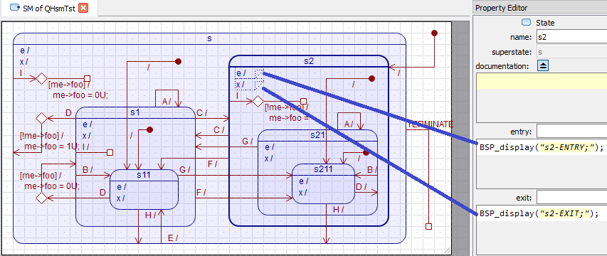

Unity Mock ExampleBlinky Example
This example shows how to apply QUTest for unit-testing Hierarchical State Machines. This example illustrates two testing strategies for state machines:
- Functional tests focus on the actions performed by the state machine.
NOTE: As described in the Unity Mock Example, testing of complex, multi-stage interactions (such as a state machine) typically requires application of a "mock object" test double. However, the QUTest design philosophy allows you to use a much simpler "spy object" test double instead. The functional testing strategy illustrates this approach.
- Structural tests focus on the state machine structure, such as entering/exiting states and executing state transitions.
NOTE: Unlike the previous examples (Unity-basic and Unity-mock), which pertained to generic C code, the structural testing of state machine makes use of the specific state machine instrumentation that is provided in QP.
Code Under Test (CUT)
This example is available in both QP/C as well as in QP/C++ frameworks.The complete code for the qhsm example is provided in the directory <qpc|qpcpp>\examples\qutest\qhsmtst.
The hierarchical state machine used in this example is artificial, but it has been specifically designed to contain all possible state transition topologies for up to 4 levels of state nesting. The code representing this state machine (the CUT here), has been generated automatically by the QM modeling tool from the model shown in the screen-shot below:

QHsmTst state machine in QM
The state machine executes actions on every entry/exit to states, on state transitions and on internal state transitions. These actions are all implemented by calling the BSP_display() function that outputs a succinct message about the location of the action within the state machine. For example, the entry action to state "s2" calls BSP_display("s2-ENTRY;") and the exit action from state "s2" calls BSP_display("s2-EXIT;"). These actions then are used for functional testing of the state machine.
Running the Test
To run the qhsm tests (on Windows), open a command prompt and type:
qspy
This will start the QSPY host application with the TCP/IP connection to the Target.
Next, open another command prompt window and type:
cd C:\qp\<qpc|qpcpp>\examples\qutest\qhsmtst\test
make
This will build the test fixture as a Windows executable and then it will run the test script. The screen shot below shows the output produced in these two command-prompt windows.
Test Fixture
The following listing shows the test fixture for the QHsm tests (file test_qhsm.c). This test fixture is used in both functional and structural tests. The explanation section following the listing clarifies the interesting lines of code (lines starting with [xx] labels).
#include "qpc.h"
#include "qhsmtst.h"
Q_DEFINE_THIS_FILE
enum {
};
int main(int argc, char *argv[]) {
static QF_MPOOL_EL(QEvt) smlPoolSto[10];
QF_init();
Q_ALLEGE(
QS_INIT(argc > 1 ? argv[1] : (
void *)0));
QF_poolInit(smlPoolSto, sizeof(smlPoolSto), sizeof(smlPoolSto[0]));
[5] QHsmTst_ctor();
return QF_run();
}
[6] void BSP_display(char const *msg) {
[7] QS_BEGIN(BSP_DISPLAY, (void *)0)
}
void BSP_exit(void) {
}
}
}
void QS_onCommand(uint8_t cmdId,
uint32_t param1, uint32_t param2, uint32_t param3)
{
(void)param1;
(void)param2;
(void)param3;
switch (cmdId) {
case 0U: {
break;
}
default:
break;
}
}
#ifdef Q_HOST
(void)e;
}
#else
(void)e;
}
#endif
#define QS_OBJ_DICTIONARY(obj_)
#define QS_FUN_DICTIONARY(fun_)
void QS_onTestSetup(void)
void QS_onTestTeardown(void)
void QS_onTestEvt(QEvt *e)
#define QS_USR_DICTIONARY(rec_)
- 1
- The
BSP_DISPLAY enumeration will be used as the record-ID for the application-specific trace record.
NOTE: The record-ID is offset by QS_USER.
- 2
- This line produces a function dictionary for the QHsm_top() function.
- 3
- This line produces a object dictionary for the
l_hsm state machine object to test.
- 4
- This line produces a user dictionary for the application-specific trace record defined at label [1].
- 5
- The "constructor" of the state machine object is called. NOTE: The explicit "constructor" call is needed only in C. In C++, static constructors are called automatically as part of the startup sequence.
Action Functions Test Doubles
For functional testing, which is focused on the actions performed by a state machine, the actions must generate some QS output. This QS instrumentation can be added either directly to the state machine model, or indirectly to the functions called from the state machine actions. The test fixture above illustrates the second option, because it was more convenient in this case (see BSP_display() implementation starting at label [6] above).
- 6
- The function
BSP_display() is called from all actions of the state machine. Inside the test fixture, this function is defined to produce QS output. This is a classic example of a "spy" test double.
- 7
- The QS output is produced with an application-specific trace record enumerated at label [1]. The second argument to the QS_BEGIN() macro is zero, which means that this record does not use any local filter.
- 8
- The QS_STR() data element outputs the message string.
Test Script (Functional Testing)
The following listing shows the test script for the QHsm tests (file test_qhsm-funct.py). The explanation section following the listing clarifies the interesting lines of code (lines starting with [xx] labels).
# preamble...
[1] def on_reset():
[2] glb_filter(GRP_UA)
[3] current_obj(OBJ_SM, "the_hsm")
# tests...
[4] test("QHsmTst init")
[5] init()
[6] expect("@timestamp BSP_DISPLAY top-INIT;")
expect("@timestamp BSP_DISPLAY s-ENTRY;")
expect("@timestamp BSP_DISPLAY s2-ENTRY;")
expect("@timestamp BSP_DISPLAY s2-INIT;")
expect("@timestamp BSP_DISPLAY s21-ENTRY;")
expect("@timestamp BSP_DISPLAY s211-ENTRY;")
expect("@timestamp Trg-Done QS_RX_EVENT")
#------------------
[7] test("QHsmTst dispatch", NORESET)
[8] dispatch("A_SIG")
[9] expect("@timestamp BSP_DISPLAY s21-A;")
expect("@timestamp BSP_DISPLAY s211-EXIT;")
expect("@timestamp BSP_DISPLAY s21-EXIT;")
expect("@timestamp BSP_DISPLAY s21-ENTRY;")
expect("@timestamp BSP_DISPLAY s21-INIT;")
expect("@timestamp BSP_DISPLAY s211-ENTRY;")
[10] expect("@timestamp Trg-Done QS_RX_EVENT")
dispatch("B_SIG")
expect("@timestamp BSP_DISPLAY s21-B;")
expect("@timestamp BSP_DISPLAY s211-EXIT;")
expect("@timestamp BSP_DISPLAY s211-ENTRY;")
expect("@timestamp Trg-Done QS_RX_EVENT")
~ ~ ~
- 1
- The script procedure
on_reset() is executed after each reset of the target. This is in contrast to the procedure on_setup(), which is executed at the beginning of all tests, including tests that don't reset the target.
- 2
- The global filter is set to
GRP_UA, which means «group-user-all» trace records. This filter setting determines the character of the test to be a functional test, because the focus is on the trace records produced by actions (user-defined records) rather than the pre-defined records generated by executing a state machine.
- 3
- The command current_obj() sets the current state machine object to
"the_hsm". Because this is performed in the on_reset() callback, this current object will be set before every test (except the NORESET-tests, which do not call on_reset()).
Test: "QHsmTst init" tests the top-most initial transition
- 4
- The test() command starts the test.
- 5
- The init() command triggers the initial transition in the current state-machine object (see label [3]).
- 6
- The following expect() commands verify that all steps of the top-most initial transition are taken in the right order.
Test: "QHsmTst dispatch" tests dispatching various events to the state machine
- 7
- The test() command starts the test.
- 8
- The dispatch() command dispatches a given event to the state machine.
- 9
- The expect() commands verify that the state machine actions (
BSP_display() function) happened.
- 10
- This expect() command verifies that the processing of the event (see dispatch() at label [8]) has completed.
Test Script (Structural Testing)
The following listing shows the test script for the QHsm tests (file test_qhsm-struct.py). The explanation section following the listing clarifies the interesting lines of code (lines starting with [xx] labels).
# preamble...
[1] def on_reset():
[3] current_obj(OBJ_SM, "the_hsm")
# tests...
[4] test("QHsmTst init")
[5] init()
[6] expect("===RTC===> St-Init Obj=the_hsm,State=QHsm_top->QHsmTst_s2")
expect("===RTC===> St-Entry Obj=the_hsm,State=QHsmTst_s")
expect("===RTC===> St-Entry Obj=the_hsm,State=QHsmTst_s2")
expect("===RTC===> St-Init Obj=the_hsm,State=QHsmTst_s2->QHsmTst_s211")
expect("===RTC===> St-Entry Obj=the_hsm,State=QHsmTst_s21")
expect("===RTC===> St-Entry Obj=the_hsm,State=QHsmTst_s211")
expect("@timestamp Init===> Obj=the_hsm,State=QHsmTst_s211")
expect("@timestamp Trg-Done QS_RX_EVENT")
#------------------
[7] test("QHsmTst dispatch", NORESET)
[8] dispatch("A_SIG")
[9] expect("@timestamp Disp===> Obj=the_hsm,Sig=A_SIG,State=QHsmTst_s211")
expect("===RTC===> St-Exit Obj=the_hsm,State=QHsmTst_s211")
expect("===RTC===> St-Exit Obj=the_hsm,State=QHsmTst_s21")
expect("===RTC===> St-Entry Obj=the_hsm,State=QHsmTst_s21")
expect("===RTC===> St-Init Obj=the_hsm,State=QHsmTst_s21->QHsmTst_s211")
expect("===RTC===> St-Entry Obj=the_hsm,State=QHsmTst_s211")
expect("@timestamp ===>Tran Obj=the_hsm,Sig=A_SIG,State=QHsmTst_s21->QHsmTst_s211")
[10] expect("@timestamp Trg-Done QS_RX_EVENT")
dispatch("B_SIG")
expect("@timestamp Disp===> Obj=the_hsm,Sig=B_SIG,State=QHsmTst_s211")
expect("===RTC===> St-Exit Obj=the_hsm,State=QHsmTst_s211")
expect("===RTC===> St-Entry Obj=the_hsm,State=QHsmTst_s211")
expect("@timestamp ===>Tran Obj=the_hsm,Sig=B_SIG,State=QHsmTst_s21->QHsmTst_s211")
expect("@timestamp Trg-Done QS_RX_EVENT")
~ ~ ~
- 1
- The script procedure
on_reset() is executed after each reset of the target. This is in contrast to the procedure on_setup(), which is executed at the beginning of all tests, including tests that don't reset the target.
- 2
- The global filter is set to
GRP_SM, which means «group-state-machine» trace records. This filter setting determines the character of the test to be a structural test, because the focus is on the pre-defined records generated by executing a state machine, rather than trace records produced by actions (user trace records).
- 3
- The command current_obj() sets the current state machine object to
"the_hsm". Because this is performed in the on_reset() callback, this current object will be set before every test (except the NORESET-tests, which do not call on_reset()).
Test: "QHsmTst init" tests the top-most initial transition
- 4
- The test() command starts the test.
- 5
- The init() command triggers the initial transition in the current state-machine object (see label [3]).
- 6
- The following expect() commands verify that all steps of the top-most initial transition are taken in the right order.
Test: "QHsmTst dispatch" tests dispatching various events to the state machine
- 7
- The test() command starts the test.
- 8
- The dispatch() command dispatches a given event to the state machine
- 9
- The expect() commands verify that the state machine RTC (Run-To-Completion) steps have been executed.
- 10
- This expect() command verifies that the processing of the event (see dispatch() at label [8]) has completed.
Unity Mock ExampleBlinky Example